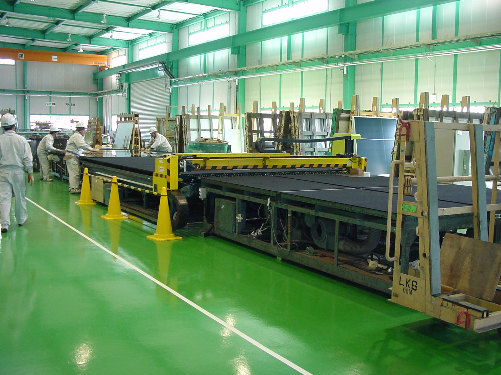
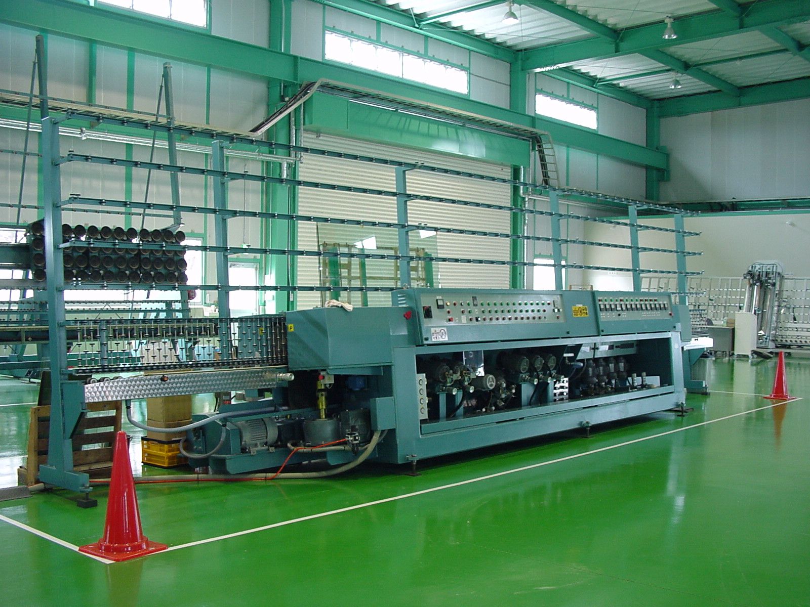

CHEMICALLY STRENGTHENED GLASS — HONJO, SAITAMA
ガラスの表面だけを、
押し合う状態にします。
化学強化（ケミカル強化）は、ガラス表面のナトリウムイオンを より大きなカリウムイオンに置き換える処理です。 表面に圧縮応力層ができ、割れにくくなります。 最大2,650×1,300mmの大板まで対応します。
ION EXCHANGE
表面に、圧縮応力層ができる。
強化の度合いは、屈折計表面応力計で測定します。 落球試験機による強度試験も承ります。
対応できる範囲
MAX SIZE
2,650
× 1,300 mm（大板化学強化）
CUTTING
2–25
mm 厚（大板対応切断機）
FOUNDED
1969
年6月 設立
EMPLOYEES
24
人
化学強化炉は大板対応の1号炉と薄板・小物対応の2号炉の 2基があり、サイズによって使い分けています。 露光機・タッチパネル・携帯用カバーガラス・ゲーム機・曲げ硝子・防爆用など、 試作テスト・小ロットからでも対応します。
業務内容
ガラス加工から、カッティングシート・車両マーキングまで手がけています。
01 — GLASS
各種ガラス＆カガミの
加工・施工・販売
- 建築用ガラス・鏡の製作、施工、販売
- 産業用薄板・ファインガラス
- フィルムラミネート施工
- 小さいものから大きいものまで対応
02 — STRENGTHENING
大板化学強化ガラス製造
- 最大 2,650 × 1,300mm
- 露光機・タッチパネル・携帯用カバーガラス
- ゲーム機・曲げ硝子・防爆用
- 試作テスト・小ロットから対応
- 強度試験も承ります
03 — ETCHING
エッチングガラス製造
- 各種文字入れ、エッチング、タペストリー
- ノングレア加工、フッ酸処理
- スクリーン印刷
04 — MARKING
カッティングシート・
車両マーキング
- 3Mカッティングシート文字製作・施工
- 看板用・車両用の各種切り文字を1枚から
- 商用車（バン・トラック）・レーシングカーのマーキング製作・施工
- マーキングデザインも承ります
- 各種オリジナルステッカー製作・販売（イラストレーター入稿可）
主要設備
熟練した技術者とともに加工製品を仕上げる設備です。 研磨・切断・穴あけ・異型加工・強化・検査までを自社で持っています。
- 01ガラス表面研磨機
- 02NC加工機（CMSブレンバーナー）2号機
- 03縦型研磨機（大板用）
- 04縦型研磨機（小物用）
- 05縦型研磨機（鏡用）
- 06縦型研磨機（広幅面取り用）
- 07ダブルエッジャー DEM-18
- 08縦型洗浄機（大板用）
- 09横型洗浄器（小物用）
- 10NC切断機（GX対応型）
- 11NC加工機（インターマック）
- 12NC加工機（CMSブレンバーナー）
- 13NC加工機（プログラム用PC）
- 14縦型NC穴あけ機
- 15横型半自動穴あけ機
- 16化学強化1号炉（大板対応）
- 17化学強化2号炉（薄板・小物対応）
- 18屈折計表面応力計
- 19落球試験機
- 20ラミネーター
- 21軟水装置（加工・研磨・洗浄）
- 22大板対応切断機（2〜25mm厚）


2011年8月に最新鋭のNC異型加工マシン、2014年1月に5軸制御NC異型加工マシンと 大板対応切断機（266″×132″、2〜25mm）を導入し稼働しています。
会社概要
| 会社名 | 株式会社 上武 |
|---|---|
| 所在地 |
本社・第一工場 〒367-0037 埼玉県本庄市共栄116 TEL 0495-24-0937（代） FAX 0495-21-6291 info@jo-bu.co.jp |
| 設立 | 1969年6月 |
| 資本金 | 1,000万円 |
| 従業員 | 24人 |
| 代表者 | 代表取締役社長（CEO） 高月 哲也 |
| 事業内容 | ガラス＆カガミの加工・施工・販売／ケミカル強化硝子加工／ 各種ガラス強度テスト／フィルムラミネート／ 商用車・レースカーマーキング／各種オリジナルステッカー（制作・施工・販売） |
| 認証 |
JIS Q 9001:2008（ISO 9001:2008）品質マネジメントシステム 認証取得（2011年9月） 登録の範囲：ガラス及び鏡の受託機械加工／ガラスのケミカル強化処理の受託加工／ ガラス製品の施工サービス（適用除外：8.3 設計・開発） |
| 指定 | 平成25年度 彩の国経営革新モデル企業 |
| 営業時間 | 8:10〜17:30 |
| 定休日 | 毎週土曜日・日曜日（週休2日制）※第一土曜日・祝日は営業 |
お問い合わせ
各種精密ガラス加工・ケミカル強化・試作・強度テストを、 小ロットより承ります。何なりとご相談ください。
FAX
0495-21-6291
図面をお送りいただけます。